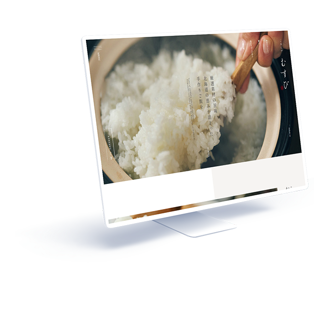

WORKS-02
02
ごはんや むすび
ごはんや むすび
コーポレートサイト
- 担当範囲
- デザイン、コーディング
- 使用言語・ソフト
- HTML(LS)、CSS3、Adobe XD、Photoshop
- 対応機種
- パソコン
- 制作期間
- デザイン6時間、コーディング10時間

高級感のある落ち着いた雰囲気を演出するため、テキストは明朝体フォントを使用し、文字のジャンプ率を低めに設定しています。
メインビューと他一部の文字は縦書きとし、和食の飲食店であることを表現するとともにメインビューの「炊き立てのお米」の写真との親和性を持たせました。
- サイト概要
- 老舗飲食店リニューアルオープンに伴うウェブサイト制作
- クライアント・依頼内容（想定）
- 現オーナーの祖母の代から営業している定食屋。現状としては大衆食堂のようなイメージのある店舗で、客層も昔からの馴染みの客が中心であるため、店舗・サイトをリニューアルして新しく若年層を取り込みたいと考えている。
また、食材の品質にこだわり、メニューの価格を上げて高級な路線に変更していきたいという展望がある。 - ターゲット層
- 20～40代女性
- サイトデザインの方向性
- 高級路線へのシフトチェンジのためのイメージ戦略を実現する。
- 制作意図・工夫した点
- 本件は「リニューアルオープン」に伴う依頼であり、新しい顧客層を開拓することが主な目的であるため、お店のスタンスを伝えるためのメッセージコンテンツ（ABOUT）を冒頭に持ってくるサイト構成としました。
高級感を出すために落ち着いた彩度低めの色を、かつ祖母の代から地域に根付いているという人情味も魅力として表現するために暖色を用いるのがよいと考え、メインカラーを薄いあずき色としました。
飲食店であるため、メニュー写真や食材の写真は大きめに配置することで、来店意欲をそそるような画面作りを心掛けました。